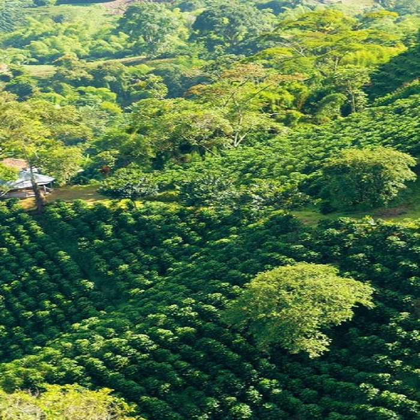

Wollu's Island of surprises
Situated amidst the beautiful Western Ghats, Kakkabe is a beautiful village that lies in Coorg. It is about 35 kms from Madikeri and can be easily reached via road.
Its beauty and tranquillity have made it one of the more popular tourist destinations The dwellers in this town are Kodavas.
Wollus-organic coffee grown in this breath-taking village in Coorg. A rich full-bodied aromatic coffee prepared from the finest Arabica beans handpicked and manually roasted with a fine blend of chicory
Our coffee comes from Coorg – Often referred to as the "Coffee cup of India"

About our Village
Kakkabe – A Magnificent Village Situated amidst the beautiful Western Ghats, it is a beautiful village that lies in Coorg. It is about 35 kms from Madikeri and can be easily reached via road.
Kakkabe has a holy temple named Padi Igguthappa. Thadiyendamol, the highest peak in Coorg with the Nalnad palace. It is also well known for Kabbe Pass and the Chelavara Falls.
The village is famous for the treks, it has a range of wildlife species and plants that dominate the rain forest. The rainforest is famous for species that include barking deer, flying squirrel, Pangolin and a wide range of birds.